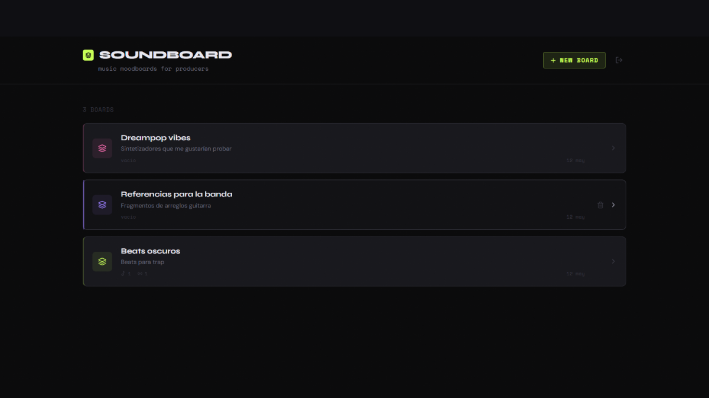
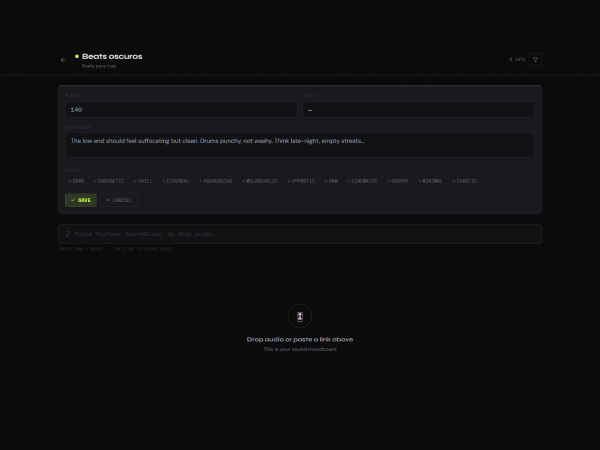
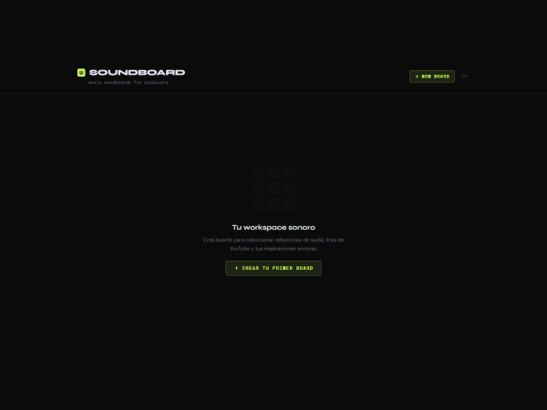

Las referencias viven en el lugar equivocado
Los productores guardan referencias en playlists con nombres crípticos, notas de voz tarareando ideas y capturas de pantalla de waveforms. El proceso creativo existe — el problema es que las herramientas no están hechas para él.
Una playlist reproduce canciones enteras pero no te permite señalar los ocho segundos que realmente importan. Un doc con links no tiene tempo ni tonalidad. Una captura de pantalla de una waveform no suena. El resultado es que la dirección sonora de un proyecto vive fragmentada entre cinco aplicaciones distintas y la memoria del productor.
Ninguna de esas herramientas habla el idioma del audio.

Audio como ciudadano de primera clase
Soundboard es un moodboard sonoro. Subís un fragmento de audio, pegás un link de YouTube o SoundCloud, marcás el segundo exacto que te inspira — y lo dejás junto a todos los demás sonidos que definen el proyecto. Podés organizar por vibe, tempo y tonalidad. Podés escuchar y construir al mismo tiempo.
No es una playlist. No es un doc de texto con links. Es el espacio donde la dirección sonora de un proyecto toma forma antes de que el productor abra su DAW.
"No es Pinterest para música. Es la herramienta de pensamiento que un productor usa antes de empezar a producir."
— Concepto central · Soundboard



El proceso
El proyecto nació de la frustración de no encontrar la herramienta adecuada. El primer paso fue mapear cómo trabajan realmente los productores: qué guardan, dónde lo guardan y por qué ese proceso siempre termina en el mismo caos. De ahí surgió el concepto de referencia con marcador de tiempo — la unidad mínima de información que hace falta y que ninguna herramienta existente maneja bien.
El diseño fue desarrollado en Figma, con foco en una interfaz que no compita con el audio sino que lo complemente. La organización por vibe, tempo y tonalidad no es solo un filtro — es el vocabulario con el que los productores piensan cuando construyen un proyecto.